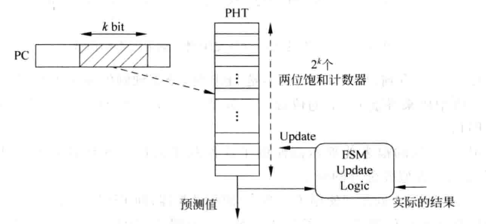

（施工中）CPU扩展设计——分支预测
写在开头
本文为笔者学习《超标量处理器设计》的一些理解，请学习时结合本书食用~
超标量处理器设计分享
概述
考虑我们在计组设计中未曾考虑的问题：如果跳转指令成功跳转，选择默认不跳转的我们需要清空流水线前面的指令，这种清空被称为跳转惩罚。
但现代CPU设计具有以下的特点：
- 流水线的深度往往较深，可以达到十几级，一次清空就要被浪费掉许多条指令。
- 流水线的设计采用超标量设计，一次取指取到大于等于两条指令。
- 处理器高并行。
这样的特点导致了这种惩罚已经不是可以通过延迟槽避免的了，并且单次惩罚损失10+条指令。
并且在现代编程中，if,for,while这些语句的出现并不稀奇，所以这种频繁的惩罚是我们不能接受的，我们就需要对跳转进行尽力的预测，让CPU的实际运行尽力接近于我们的预测，这就引入了今天的设计——分支预测。
预测内容
方向
我们需要预测现在摆在我们面前的这条分支语句会不会发生跳转。
目标地址
我们需要预测现在摆在我们面前的这条分支语句如果真跳了，会跳到哪里？
方向预测
基于两位饱和计数器的分支预测
定位
最好写的分支预测，后续更强大的分支预测的基础。
思路
一条指令
在某种情况下，对于某一条特定的跳转指令，跳转方向是固定的。
比如：For循环的循环判断
我们因此可以用一定量过去的同一PC的该条指令真正执行的跳转方向来预测本次跳转的方向。
由于是二位的，所以我们利用过去两次执行情况来预测本次执行，我们先定义四个状态
- Strongly taken: 计数器饱和，在这种状态下预测本次发生跳转。
- Weakly taken: 计数器不饱和，在这种状态下预测本次发生跳转。
- Weakly not taken: 计数器不饱和，在这种状态下预测本次不发生跳转。
- Strongly not taken: 计数器饱和，在这种状态下预测本次不发生跳转。
使用方法很简单：
- 对于每次预测的结果，我们用它来改变状态机的状态。
- 对于每次进行的预测，我们根据我们当前所处的状态给出预测。
状态转移如下：
例如现在我们处于Strongly not taken状态，并且这时候来了一条需要预测的指令，我们做出了不跳转的预测。
假如我们预测正确，状态不变，仍为Strongly not taken饱和。
假如我们预测失败，状态转移，变为Weakly not taken不饱和。
完全实现
前面是对于某一条固定PC值对应的跳转指令的预测方式，但在实际中，我们会有很多pc值不同的跳转，我们都需要对其进行预测。
所以我们可以建立一个数组（在FPGA开发中是寄存器组），存放每一个跳转的两位饱和计数的状态。
每次预测和更新都从这个数组中取出状态进行更新，这样就完成了对于所有跳转的预测。
但是，由于板子资源有限，我们显然不能开2^32大小的数组，所以我们可以取PC的某一些位作为寻址。

显然可能会发生碰撞，我们可以通过哈希降低碰撞。
本博客所有文章除特别声明外，均采用 CC BY-NC-SA 4.0 许可协议。转载请注明来自 ForeverYolo的博客！
评论